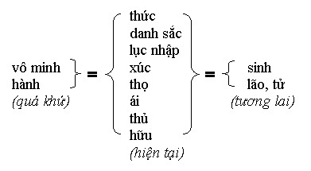

|
Thực Tại Hiện Tiền Viên Minh |
|
BuddhaSasana Home Page |
Vietnamese, with Unicode Times font |
|
|
Thực Tại Hiện Tiền Viên Minh |
|
[07] THẬP NHỊ NHÂN DUYÊN
Thập nhị nhân duyên là 12 điều kiện tùy thuộc vào nhau mà sinh và cũng tùy thuộc vào nhau mà diệt, có cái này thì có cái kia, không có cái này thì không có cái kia. Cái này sinh thì cái kia sinh, cái này diệt thì cái kia diệt. Trong Tứ diệu đế, Thập nhị nhân duyên sinh chính là tập đế, khổ đế. Thập nhị nhân duyên diệt chính là đạo đế, diệt đế. Vậy Thập nhị nhân duyên chỉ là cách nói khác của Tứ diệu đế, chứ không phải như người ta thường hiểu lầm Tứ diệu đế là pháp môn tu của Thanh Văn và Thập nhị nhân duyên là pháp môn tu của Duyên Giác. Chỉ vì trùng nhau chữ duyên mà người ta liên tưởng một cách sai lầm. Trên thực tế, ai muốn tu hành thành Phật cũng đều phải tu Tứ diệu đế mà trong đó đã bao hàm 12 nhân duyên. Có hai cách hiểu Thập nhị nhân duyên: - Một là hiểu như vòng luân hồi sinh tử trong 3 thời: quá khứ, hiện tại, vị lai. - Hai là hiểu như tiến trình tâm-sinh-vật lý được điều động bởi vô minh, ái dục trong 3 thời quá khứ, hiện tại, vị lai (đây chỉ nói Thập nhị nhân duyên sinh). Bây giờ chúng ta sẽ lần lượt trình bày 2 ý nghĩa trên của Thập nhị nhân duyên: * Trước tiên Thập nhị nhân duyên mô tả diễn biến của vòng luân hồi sinh tử trong 3 thời: Trong những kiếp quá khứ, do thiếu sáng suốt (vô minh) chúng ta đã tạo các hạnh nghiệp (hành), rồi thác sinh vào những cảnh giới tương ứng trong hiện tại. Kiếp sống quá khứ chấm dứt với tử tâm (cuti). Sau đó thức tái sanh, tức là kiết sinh thức (patisandhi-viññāna) khởi lên nối liền với kiếp sống hiện tại. Thức này còn gọi là hương ấm thuộc về danh (tâm), kết hợp với tinh cha huyết mẹ thuộc về sắc (thân), tạo thành sự sống của cái phôi gồm đủ hai yếu tố danh và sắc nên gọi là danh sắc. Dần dần cái phôi lớn lên, sắc hình thành mắt, tai, mũi, lưỡi, thân gọi là ngũ căn, và danh hình thành từ thức gọi là ý căn. Năm căn hòa hợp với ý căn tạo thành tác dụng của lục nhập, tức là 6 cơ quan tiếp nhận đối tượng của chúng. Khi hình thành một thai nhi đủ điều kiện ra khỏi bụng mẹ, hài nhi ra đời và lục căn bắt đầu tiếp xúc với lục trần. Tức là mắt, tai, mũi, lưỡi, thân, ý tiếp xúc với sắc, thanh, hương, vị, xúc, pháp. Sự tiếp xúc giữa căn trần vừa xảy ra thì liền có thọ, tức là những cảm giác khổ, lạc, xả và hỷ. Nói đến xúc tức là đã bao hàm các thức, vì vậy ở đây: - Nhãn thức thọ xả. Đ ã có khổ, lạc, xả, hỷ, thì liền có ưa, ghét khởi lên. Đó là ái. Ở đây ái chính là dục ái, hữu ái, phi hữu ái hoặc dục ái, sắc ái, vô sắc ái như chúng ta đã nói trước đây (đến đây mới có ưu).Khi đã có ưa, ghét (ái) thì ưa sinh đam mê, ghét sinh hiềm hận. Sự nắm giữ ái như vậy gọi là thủ. Nói rõ hơn thủ có 4 loại: - Dục thủ là nắm bắt lục dục. Do chấp thủ tư kiến, tư dục, hình thức và bản ngã mà chúng ta tạo nghiệp. Đó chính là hữu. Hữu tức là tạo tác để trở thành (becoming), có nghĩa là tạo nghiệp bất thiện, thiện và bất động. Ái có dục ái, sắc ái, vô sắc ái nên hữu (nghiệp) cũng có dục hữu, sắc hữu, vô sắc hữu, nghĩa là tạo nghiệp để tái sinh trong tương lai ở 3 cõi 6 đường. - Nghiệp bất thiện thì tương lai tái sinh trong 4 đường khổ: địa ngục, súc sanh, ngạ quỷ, a-tu-la. - Nghiệp vừa thiện vừa bất thiện thì tương lai tái sinh vào cõi người. - Nghiệp thiện thì tương lai tái sinh trong các cõi trời dục giới như Tứ đại thiên vương, Đao lợi, Dạ ma, Đâu suất, Hóa lạc thiên, Tha hóa tự tại thiên. - Nghiệp sắc giới thì sẽ tái sinh vào các cõi sắc giới, tùy theo sự chứng đắc của mình. - Nghiệp bất động thì tương lai tái sinh trong các cõi vô sắc giới, tùy theo khả năng thiền định của mình. Khi đã tái sinh thì lại tạo nghiệp và đưa đến già chết (lão tử), cứ thế sinh sinh tử tử trong vòng luân hồi lẩn quẩn triền miên. Tóm lại, từ vô minh đến ái dục, từ tạo nghiệp đến gặt quả, từ tái sinh đến già chết, đó là những gì được mô tả rõ ràng qua các yếu tố điều kiện phát sinh trong Thập nhị nhân duyên. Có người hỏi: - Nếu Thập nhị nhân duyên được dùng giải thích vòng luân hồi tái sinh thì có phải chăng vô minh chính là khởi thủy hay nguyên nhân đầu tiên của chúng sinh? Thập nhị nhân duyên có phải là vũ trụ quan hoặc nhân sinh quan Phật giáo không? - Vô minh là nguyên nhân nhưng không phải là nguyên nhân đầu tiên của luân hồi sinh tử, vì là điều kiện phát sinh nên vô minh vừa là nguyên nhân của vòng sinh tử sau, vừa là kết quả của vòng sinh tử trước, nghĩa là vô minh cũng do nhân duyên phát sinh, không nên hiểu vô minh như là Đấng Tạo Hóa. Cũng đừng gán cho Thập nhị nhân duyên nhãn hiệu vũ trụ quan hay nhân sinh quan. Thập nhị nhân duyên chỉ mô tả trình tự duyên khởi của diễn tiến tâm-sinh-vật-lý do vô minh điều động mà thôi. Có lẽ chúng ta ai cũng có thể chấp nhận cách giải thích theo truyền thống như đã trình bày ở trên, nhưng bây giờ chúng ta thử tìm hiểu một ý nghĩa khác của Thập nhị nhân duyên, thực tế hơn, gần gủi hơn ngay trong đời sống hàng ngày của chúng ta. Đức Phật dạy: " Thấy Thập nhị nhân duyên tức thấy pháp, thấy pháp tức là thấy Như Lai". Chúng ta cũng đã biết pháp là thiết thực hiện tại hay thực tại hiện tiền, vượt khỏi thời gian, tự mình chứng nghiệm từ bên trong.Nếu thấy được Thập nhị nhân duyên sinh thì chúng ta cũng có thể thấy Thập nhị nhân duyên diệt. Như vậy ngay trong hiện tại chúng ta có thể giác ngộ ra sự thật duyên khởi này, và nhờ đó có thể chấm dứt vòng luân hồi sinh tử ngay tại đây và bây giờ vì pháp là thiết thực hiện tại, vượt khỏi thời gian, có phải vậy không? Ngày xưa, ngay khi Đức Phật thuyết về Thập nhị nhân duyên, có rất nhiều vị giác ngộ ngay lập tức và chấm dứt hoàn toàn vòng luân hồi sinh tử. Nếu chúng ta có thể thay đổi tiến trình tâm hay chấm dứt ngũ uẩn (bản ngã) ngay bây giờ, thì chính là chúng ta đã chấm dứt vòng duyên khởi tái sinh. Thập nhị nhân duyên chỉ là triển khai rộng rãi và chi tiết hơn của ngũ uẩn hay tiến trình tâm mà thôi. Thập Nhị Nhân Duyên và Ngũ Uẩn Trong quá khứ, nếu thức, danh sắc, lục nhập, xúc, thọ sinh khởi trong tình trạng si mê, bất giác, thất niệm, tức là bị vô minh chi phối, thì ái, thủ và hữu cũng phát sinh, đó là hành. Vô minh và hành trong quá khứ là nhân tái sinh khởi thức, danh sắc, lục nhập, xúc, thọ trong hiện tại. Từ đó lại phát sinh ái, thủ, hữu. So với ngũ uẩn chúng ta thấy:
Như vậy ngũ uẩn tương đương với phần hiện tại của Thập nhị nhân duyên. Thực ra chúng ta chỉ cần duyên khởi trong hiện tại từ thức đến hữu tức là chúng ta có thể thấy duyên khởi trong quá khứ. Tuy trong quá khứ chỉ nói vắn tắt là vô minh và hành, nhưng trong thực tế cũng bao gồm từ thức đến hữu như trong hiện tại. Trong tương lai cũng vậy, từ sinh đến lão tử chính là từ thức đến hữu như trong hiện tại.  Thức khởi sinh rồi đi xuyên suốt qua danh sắc, lục nhập, xúc, thọ, ái, thủ, hữu và cuối cùng thức làm công tác của thức uẩn là ghi lại tiến trình vừa trải qua. (Tương đương đồng sở duyên trong tiến trình tâm của Abhidhamma và A-lại-da của Duy Thức). Tóm lại phần hiện tại của Thập nhị nhân duyên chính là tiến trình ngũ uẩn vậy. Thập Nhị Nhân Duyên Với Tiến Trình Tâm Như chúng ta đã biết, một tiến trình tâm trong quá khứ được đồng sở duyên ghi lại và chìm vào hữu phần. Khi có một đối tượng tác động qua 5 môn hoặc qua ý môn thì thức lại hiện khởi. Đó cũng chính là thức trong Thập nhị nhân duyên.
Sau khi thức hiện khởi, tiếp nhận đối tượng thì Javana phản ứng trên đối tượng. Javana chính là ái, thủ, hữu trong Thập nhị nhân duyên.
Trong Thập nhị nhân duyên vai trò của đồng sở duyên được hiểu ngầm, nhưng thật ra nó vẫn có mặt giữa hữu và sinh lão tử. Để thấy r õ hơn chúng ta thử xem Thập nhị nhân duyên diễn ra theo tiến trình tâm như thế nào?Giả sử chúng ta đang ngồi đây hoặc đang đi lui tới như thế này trong trình trạng si mê, bất giác, không sáng suốt, thiếu tỉnh thức, nghĩa là chúng ta đang ở trong trạng thái vô minh. Lúc đó tâm chúng ta rất dễ vọng động, vì nó ẩn chứa và sẵn sàng phát sinh các ái đó chính là hành. Vậy một tâm thức không sáng suốt, dễ vọng động chính là vô minh và hành. Trong điều kiện sẵn có như vậy, nếu có một đối tượng tác động vào, thì thức sẽ khởi lên kết hợp với sắc căn để tiếp nhận đối tượng ấy. Kết hợp đó gọi là danh sắc. Sự kết hợp trong trình trạng như thế không được trong sáng, hỗn độn và bất an. Đó chính là một hỗn hợp thân-tâm không sáng suốt, định tĩnh, trong lành hay nói một cách khác là thân tâm thiếu điều phục.
Danh-sắc là từ để gọi chung một tổ hợp thân tâm gồm mắt, tai, mũi, lưỡi, thân và ý. Vì vậy danh-sắc sẽ hiện rõ trong từng căn tùy theo đối tượng trần cảnh mà khởi sinh lục nhập. Mắt, tai, mũi, lưỡi, thân thuộc về sắc. Ý thuộc về danh. Nếu đối tượng là sắc tướng thì mắt khởi dụng, nếu đối tượng là âm thanh thì tai khởi dụng, v.v...
Mắt khởi dụng có nghĩa là tiếp nhận sắc tướng. Nhưng sự tiếp nhận chỉ thực sự xảy ra khi có sự tham dự của nhãn thức. Sự kết hợp giữa căn trần và thức gọi là xúc (trong ngũ uẩn gọi là sắc uẩn). 6 căn + 6 trần + 6 thức = xúc Khi có tiếp xúc của căn-trần-thức thì thì thọ liền phát sinh. Trong Thập nhị nhân duyên, thọ vừa đóng vai trò cảm giác, vừa đóng vai trò tri giác.
Sau khi tiếp nhận đối tượng (xúc) với đầy đủ cảm giác (thọ) và tri giác (tưởng), ý chí (tư) bắt đầu phản ứng trên đối tượng. Phản ứng ấy được biểu hiện qua thái độ ưa, ghét (ái), bám víu (thủ), và tạo tác (hữu). Như vậy ái, thủ, hữu chính là hành trong ngũ uẩn và Javana (tốc hành tâm) trong tiến trình tâm.
Ví dụ: khi tai nghe một âm thanh khó chịu, có nghĩa là thức → danh sắc → lục nhập → xúc đưa đến thọ khổ. Thọ khổ đưa đến ghét tức là phi hữu ái. Nếu âm thanh dễ chịu tức là thọ lạc, thọ lạc đưa đến ưa thích - hữu ái. Nếu âm thanh không gây khó chịu hay dễ chịu, tức là thọ xả, đưa đến tâm khởi lên tìm kiếm lạc thọ, đó là dục ái.
Nhưng người ta không đơn giản chỉ ưa hay ghét rồi thôi mà ưa ghét trở thành thành kiến, quan niệm, cố chấp, đam mê, thù hận, v.v... do đó ái đưa đến thủ. Nếu chúng ta ưa một cái gì thì thành đam mê cái đó. Nếu chúng ta ghét một cái gì thì thành thù hận cái đó. Vậy đối với trần cảnh đam mê hay thù hận chính là dục thủ. Cố chấp đối với ưa hay ghét đưa đến thành kiến, quan niệm. Ưa thì dễ sinh thường kiến, ghét thì dễ sinh đoạn kiến, rồi chấp chặt quan niệm đó nên gọi là kiến thủ. Xét cho cùng thì dục thủ hay kiến thủ cũng đều phát xuất từ chấp ngã. Nếu không chấp bản ngã thì lấy ai chấp ưa ghét hay thường đoạn, có phải vậy không? Chấp ngã chính là ngã thủ. Dục thủ, kiến thủ, ngã thủ đưa đến hình thành những phong cách, những đời sống, những hình thức nghi lễ, những tập tục tín ngưỡng, rồi người ta tự trói buộc vào những quy phạm mà người ta đã đặt ra. Đó là giới cấm thủ.
Nói chung, thủ là chấp trước. Nếu chỉ mới chớm sinh ưa ghét mà chúng ta giác kịp thì cũng chưa sao. Nhưng khi đã cố chấp thì chúng ta liền tạo tác lăng xăng. Tạo tác chính là hữu hay nói cho dễ hiểu là tạo nghiệp. Do dục ái, hữu ái, phi hữu ái, chúng ta đã tạo nghiệp trong 3 cõi là dục hữu, sắc hữu, vô sắc hữu.
Đến đây chúng ta cần lưu ý một điểm l à dù chúng ta đắc các thiền định trong sắc giới hoặc vô sắc giới, thì vẫn do ái-thủ-hữu mà ra (trừ Thánh định). Rất nhiều người ưa thích thiền định vì ham mê năng lực và hỷ lạc của thiền định. Như vậy là bị ái-thủ-hữu chi phối rồi, không thể nào chấm dứt luân hồi sinh tử được.Đức Phật chỉ d ùng thiền định với 2 mục đích chính: một là đoạn trừ các phiền não do 5 triền cái che lấp (Nānākilesappahānam), hai là tồn tâm dưỡng tánh, hay nói một cách khác là nghỉ ngơi trong trạng thái tích cực gọi là hiện tại lạc trú (ditthadham-masukhavihārā). Nhờ tâm an ổn mà trí tuệ soi chiếu đưa đến hoàn toàn giải thoát giác ngộ.Như vậy, Thập nhị nhân duyên trong hiện tại còn lại 8 điều kiện phát sinh (trừ 2 điều kiện quá khứ và 2 điều kiện tương lai). 8 điều kiện này tương đương với 6 giai đoạn trong tiến trình tâm:
Chúng ta cần lưu ý khi đem so sánh 8 điều kiện hiện tại của Thập nhị nhân duyên với ngũ uẩn, chúng ta thấy đó chỉ là 2 cách diễn đạt khác nhau của cùng một hiện tượng. Nhưng khi đem so sánh 8 điều kiện này với tiến trình tâm thì ta thấy chúng chỉ tương đồng trong tam giới mà thôi. Tiến trình tâm siêu thế (lokuttara) không còn so sánh với Thập nhị nhân duyên sinh được nữa. Như vậy, Thập nhị nhân duyên sinh chỉ là tiến trình tâm trong tam giới (lokiya). Vì tốc hành tâm có 2 loại: tốc hành tâm siêu thế (lokuttarajavana) và tốc hành tâm trong tam giới (lokiyajavana). Ái, thủ, hữu chính là tốc hành tâm trong tam giới, chứ không phải tốc hành tâm siêu thế. Trong tiến trình tâm siêu thế, tốc hành tâm không còn ái, thủ, hữu mà được thay bởi Đạo Tuệ và Quả Tuệ. Tuệ tức là minh, khi minh soi chiếu thì Thập nhị nhân duyên diệt. Vậy tiến trình tâm siêu thế chính là tiến trình Thập nhị nhân duyên diệt: Thập nhị nhân duyên sinh = tiến trình tâm hiệp thế Thập nhị nhân duyên diệt = tiến trình tâm siêu thế Vậy thế nào là Thập nhị nhân duyên diệt? Giả sử chúng ta đang ngồi đây hay đi lui đi tới như thế này trong tình trạng hoàn toàn tỉnh thức, hoàn toàn sáng suốt, không mê muội, biết rõ thân tâm và hoàn toàn an tĩnh, nghĩa là không bị vô minh và hành chi phối. Nếu bây giờ có một đối tượng khởi sinh, chẳng hạn như tai nghe một âm thanh hay mắt thấy một hình sắc, nhờ ở trong trình trạng tự chủ, ổn định (tịnh) và sáng suốt, tỉnh thức (minh) nên thức, danh sắc, lục nhập, xúc và thọ đều được soi sáng trong định tuệ. Khi cảm giác và tri giác trong sáng, chính xác, không bị ảo giác, ảo tưởng xen vào thì hành động sẽ không bị chi phối bởi ái, thủ, hữu nữa, và vì vậy sẽ không còn nhân tạo tác sinh-lão-tử trong tương lai. Nghĩa là sinh tử chấm dứt. Vậy Thập nhị nhân duyên diệt vừa có nghĩa là chấm dứt vòng luân hồi sinh tử trong tam giới, mà cũng có nghĩa là chấm dứt sinh tử luân hồi ngay khi sự sống đang vận hành, vì luân hồi sinh tử chỉ là ảo ảnh đối với sự sống đích thực. Nói cho dễ hiểu là ngay khi chúng ta đang nói năng, hành động, suy nghĩ mà vẫn sáng suốt, định tỉnh, trong lành một cách hoàn toàn thì chúng ta đang thoát khỏi sự trói buộc của vòng sinh tử vô minh ái dục. -ooOoo- |
Chân thành cám ơn anh Lê Trung Thành đã gửi tặng bản vi tính (Bình Anson, tháng 1-2004)
[Trở
về trang Thư Mục]
last updated:
08-01-2004